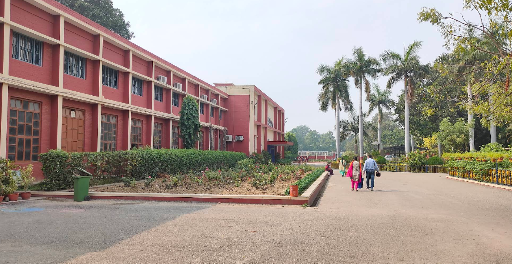
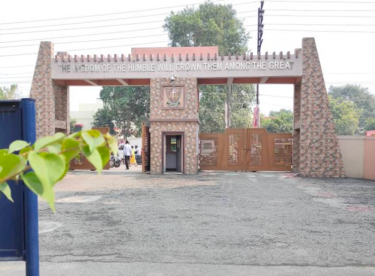
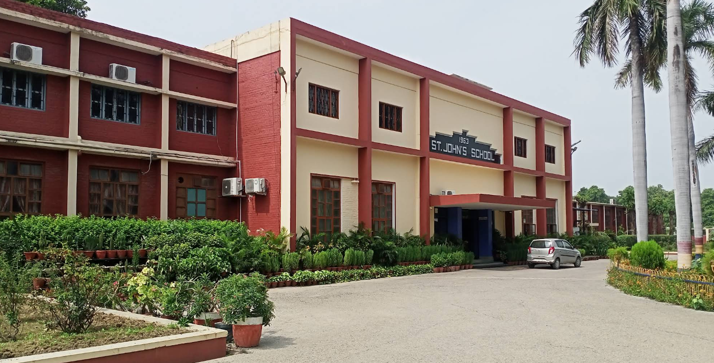

Affiliated to the Council for the Indian School Certificate Examinations (ICSE)
Campus Gallery



About the School
St. John’s School (DLW), Varanasi is one of the reputed ICSE schools in the city, managed by the Catholic Diocese of Varanasi. The school provides holistic education combining academics, discipline, and moral values. It has been serving students from LKG to Class XII with a mission to nurture responsible global citizens.
Academics
Affiliated to the ICSE (Class X) and ISC (Class XII) Boards.
Subjects offered include English, Hindi, Science, Mathematics, Computer Applications, History, Geography, and more.
Focus on concept-based learning, projects, and practical knowledge.
Regular assessments, digital classrooms, and experienced faculty ensure academic excellence.
Admission Process
Admission forms are available from the school office during the notified period (usually January–March).
For lower classes, admission is based on interaction and seat availability.
For higher classes, a written entrance test and previous performance are considered.
All admissions are subject to management approval and document verification.
Eligibility
Minimum age for Nursery: 3 years as on 31st March of the admission year.
For higher classes, students must produce a Transfer Certificate from a recognized institution.
Good conduct and academic record are essential for consideration.
Facilities
Smart classrooms equipped with digital boards.
Well-maintained computer, science, and language labs.
Spacious playground, auditorium, and prayer hall.
Library with wide range of academic and reference books.
Regular sports, cultural and co-curricular events.
Advice (From Your Big Brother 💬)
Bro, always remember — school life is your foundation. Don’t just study for marks, study to understand. Respect your teachers, value your friends, and believe in yourself. Every day at St. John’s is a step toward your future. Be disciplined, dream big, and never compare your journey with others — your time will come. 💪✨
Disclaimer
This page is created for educational and informational purposes only. It is not the official website of St. John’s School, DLW, Varanasi. All details are compiled from publicly available information with respect and love for the institution. For official updates, please contact the school directly.
Contact Information
Address: St. John’s School, DLW Campus, Varanasi – 221004